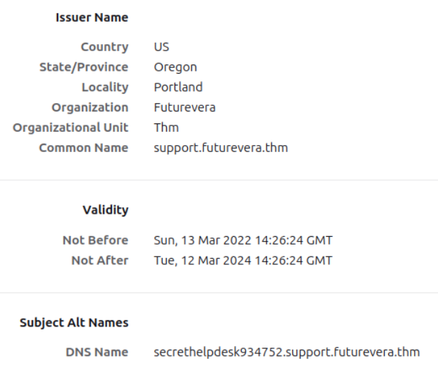
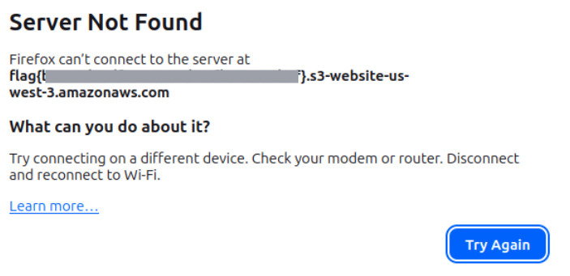

TakeOver
Sala para practicar habilidades de enumeración
URL: https://tryhackme.com/room/takeover
Resumen
Se realizaron pruebas de reconocimiento y enumeración obteniendo información de subdomonios, hosts virtuales y detalles en los certificados. Esto puede conducir a un reconocimiento más profundo utilizando ingeniería social, por lo cual es recomendable mantener acceso a la información privada solo desde la intranet
Metodología
Reconocimiento
El escaneo inicial muestra los siguiente resultados
$ nmap -n -Pn [TARGET]
PORT STATE SERVICE
22/tcp open ssh
80/tcp open http
443/tcp open https
Enumeración
Para acceder a la pagina futurevera.thm y realizar la enumeración de manera correcta es necesario modificar el archivo /etc/hosts para que la dirección IP objetivo se pueda resolver
$ sudo nano /etc/hosts
127.0.0.1 localhost
[TARGET] futurevera.thm
Se realizaron 3 intentos de enumeración. El primero en busca se direcotrios, el segundo para subdominios y el tercero para hosts virtuales, este último tuvo éxito.
$ ffuf -u https://[TARGET] -w /usr/share/wordlists/SecLists/Discovery/DNS/subdomains-top1million-20000.txt -H "Host: FUZZ.futurevera.thm" -fs 4605
/'_\ /'_\ /'_\
/\ \_/ /\ \/ _ _ /\ \_/
\ \ ,_\\ \ ,\/\ \/\ \ \ \ ,_\
\ \ \/ \ \ \/\ \ \\ \ \ \ \/
\ \\ \ \\ \ \_/ \ \\
\// \// \/_/ \/_/
v2.1.0
________________
:: Method : GET
:: URL : https://[TARGET]
:: Wordlist : FUZZ: /usr/share/wordlists/SecLists/Discovery/DNS/subdomains-top1million-20000.txt
:: Header : Host: FUZZ.futurevera.thm
:: Follow redirects : false
:: Calibration : false
:: Timeout : 10
:: Threads : 40
:: Matcher : Response status: 200-299,301,302,307,401,403,405,500
:: Filter : Response size: 4605
________________
blog [Status: 200, Size: 3838, Words: 1326, Lines: 81, Duration: 3ms]
support [Status: 200, Size: 1522, Words: 367, Lines: 34, Duration: 7ms]
:: Progress: [19983/19983] :: Job [1/1] :: 1626 req/sec :: Duration: [0:00:25] :: Errors: 0 ::
Consulte apéndice para los dos primeros intentos
Igualmente, es necesario poner los subdomonios que utilizan host virtual en el archivo /etc/hosts.
$ sudo nano /etc/hosts
127.0.0.1 localhost
[TARGET] futurevera.thm support.futurevera.thm blog.futurevera.thm
Explotación
Se comprobaron datos de los certificados de ambas páginas web y se encontró el siguiente nombre alternativo en support.futurevera.thm

La entrada a la pagina web es la siguiente.

Muestra la bandera
En esta ocasión no es necesario agregar la URL al archivo /etc/hosts, basta con acceder a la pagina web a través del navegador
Impacto
Al poseer certificados desactualizados es posible realizar un seguimiento del historial administrativo de la página web, es decir, obtener información de quién hizo un cambio, cuándo se realizó y qué entidad estuvo involucrada. Esto puede conducir a ingeniería social diriga a personas internas y externas de la organización pudiendo revelear información privada.
Recomendaciones
- Acceso a sitios privados solo desde la intranet
- Mantener siempre actualizado los certificados
- Seguimiento de modificaciones realizadas en la pagina web, certificados, llaves, encargados del proyecto, etc.
Aprendizajes
Ofensivo
- Enumerar objetivo por directorios, subdominios y virtual host
- Explorar recursos utilizados por la página web
Defensivo
- Permitir acceso a paginas web privadas solo desde la intranet
- Configurar tazas mínimas y máximas de solicitudes por segundo para mitigar escaneos, reconocimiento y fuerza bruta.
Apéndice
Primer intento en busca de directorios utilizando gobuster
$ gobuster dir -u https://futurevera.thm -w /usr/share/wordlists/SecLists/Discovery/Web-Content/directory-list-2.3-medium.txt
No se encontraron resultados relevantes
Segundo intento en busca de subdominios utilizando gobuster
$ gobuster dns -d futurevera.thm -w /usr/share/wordlists/SecLists/Discovery/DNS/subdomains-top1million-110000.txt